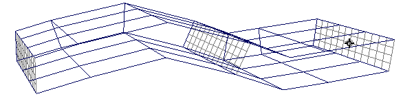
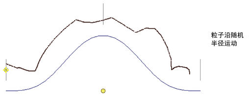
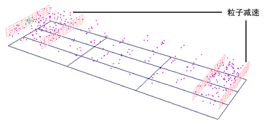
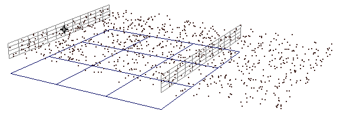
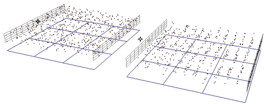
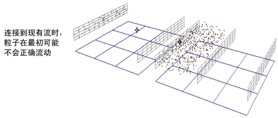

曲面流效果发射沿任何 NURBS 模型的曲面流动的粒子。可以使用该效果创建流动的流体、气体或实例化对象。流效果会根据曲面形状的任何改变自动调整。
创建曲面流
- 选择一个或多个 NURBS 曲面。
- 选择 >
 。
。 - 根据需要在选项窗口中设定控制。
有关与创建相关的控制，请参见设定曲面流创建控制。
有关可以稍后编辑的控制，请参见编辑曲面流。
- 单击“创建曲面流效果选项”(Create Surface Flow Effect Options)窗口中的“创建”(Create)（请参见曲面流选项）。
发射器和流操纵器将显示在曲面上。
注：可能需要很长时间才能创建曲面流。创建时间受以下因素影响：场景中的对象数、已有的其他流数和指定的流操纵器数。
- 播放动画。
- 使用软件或硬件渲染（根据粒子渲染类型选择）渲染场景。
设定曲面流创建控制
创建控制仅在创建时适用。以后不能修改这些控制。
- >
编辑曲面流
可以在创建曲面流效果后编辑这些属性，方法是选择曲面流选择控制柄并打开“通道盒”(Channel Box)或“属性编辑器”(Attribute Editor)的“附加属性”(Extra Attributes)区域。
您不能直接旋转或平移操纵器，因为它们会根据曲面形状的任何更改自动调整。但是，您可以编辑“位置”(Location)属性，使它们沿曲面移动。
- 显示子操纵器(Display Sub Manips)
-
启用或禁用流子操纵器的可见性。
- 显示真实操纵器形状(Show True Manip Shape)
-
默认情况下，操纵器完全按照所指定的形状显示为包裹基础曲面的平滑皮筋。该效果使用的实际形状取决于您在创建曲面流时设定的“操纵器分辨率”(Manipulator Resolution)值。
若要查看该形状，请启用“显示真实操纵器形状”(Show True Manip Shape)属性。这不会影响曲面流移动粒子的方式，只是让您了解模拟尝试达到的精确程度。
- 平滑子操纵器(Smooth Sub Manips)
-
可以使用该选项可以在散布开或移到一起的流操纵器之间平滑子操纵器的平移。如果未更改流操纵器的位置，该选项不会有任何效果，因为默认位置已经是平滑的。
- 显示最小放样(Display Min Loft)、显示最大放样(Display Max Loft)、显示边放样(Display Edge Loft)
-
启用“可见性”(Visibility)（在“SurfaceFlow”属性编辑器的“显示”(Display）区域)时，可以通过分别启用“显示最小放样”(Display Min Loft)、“显示最大放样”(Display Max Loft)和“显示边放样”(Display Edge Loft)来选择显示流放样的内部边、外部边或边距离。
 - 发射器速率(Emitter Rate)
-
设定粒子在流中的发射度。发射应用于第一个流操纵器的曲面区域。发射速率 0（零）表示不显示任何粒子。
- 随机速率(Random Speed)
-
设定粒子速度的随机更改量。使用该属性可以创建更自然的效果。
- 随机半径(Random Radius)
-
设定粒子发射半径的随机更改量，以使粒子扩散到流操纵器放样之外。使用该属性可以创建更自然的效果。
 - U 位置或 V 位置(U or V Location)
-
控制每个流操纵器的位置（以 U 或 V 度量）。可以沿曲面以任意顺序将操纵器移动到任何位置。
通常，可以调整操纵器位置来影响粒子速度。粒子在附近的操纵器之间会减慢速度，在远处的操纵器之间会加快速度。
您可能还需要调整操纵器的位置（如果它放置在收敛线程的末端）。例如，圆锥体末端的操纵器是不可见的，因为该点处的曲面为零。
这些值始终介于 0 和 1 之间，无论原始曲面的参数化是何情况。因此，值 0.5 将大约位于曲面的中心。
- 最小值 U 或最小值 V (Min U or V)、最大值 U 或最大值 V (Max U or V)
-
控制每个流操纵器的开始和结束位置（以 U 或 V 度量）。如果希望流仅覆盖曲面的一部分，可调整这些值。例如，可以通过在一个流开始（最小值设置）的同一点结束（最大值设置）另一个流，将曲面断开为两个相邻的流。
这些值始终介于 0 和 1 之间，无论原始曲面的参数化是何情况。因此，值 0.5 将大约位于曲面的中心。
- 最小距离(Min Distance)、最大距离(Max Distance)
-
控制曲面与每个流操纵器的顶部和底部之间的距离。通过调整这些值，不仅可以影响曲面的接近性，而且会影响流的厚度。
- 最小年龄比率(Min Age Ratio)、最大年龄比率(Max Age Ratio)
-
指定总粒子寿命的哪一部分出现在流中 — 流寿命与总寿命的比率。例如，如果将“最大年龄比率”(Max Age Ratio)设定为 0.5，则粒子在其一半寿命内沿曲面流动，然后继续并超越最后一个流操纵器。
年龄比率还间接影响粒子速度。在上面的示例中，粒子只有一半寿命达到流的末尾，因此它们会加快速度。
- 目标权重(Goal Weight)
-
设定流中的所有粒子被吸引到流操纵器的程度。值的范围可为 0（无权重）到 1（完全权重）。
编辑粒子寿命
若要编辑粒子寿命，必须选择粒子节点，而非流组节点，因为每个流可能有多个粒子。
- 粒子寿命(Particle Lifespan)
-
设定流中所有粒子的消亡时间。该选项控制总寿命，但“最小年龄比率”(Min Age Ratio)和“最大年龄比率”(Max Age Ratio)控制流内的寿命。因此，“粒子寿命”(Particle Lifespan)可能会影响粒子速度，以符合“最小年龄比率”(Min Age Ratio)和“最大年龄比率”(Max Age Ratio)设置的要求。
在单独的曲面上连接流
可以从单独的曲面连接流，以使其共享相同的粒子。工作流会有所不同，具体取决于您是同时创建流还是从现有流开始。
创建连接流
- 按照您希望粒子流动的顺序选择曲面。
- 选择 > 。
- 在选项窗口中，禁用“逐流创建粒子”(Create Particles Per Flow)。
- 在“控制分辨率”(Control Resolution)选项中，指定每个曲面上流操纵器的数量。
- 单击“创建”(Create)。
该效果会对每个曲面创建一个流，并且粒子按选择的顺序流动。
注：默认情况下，“最小年龄比率”(Min Age Ratio)和“最大年龄比率”(Max Age Ratio)在流中等分。因此，如果对曲面进行分隔，则会出现间隙。如果希望由粒子来填充间隙，请编辑“最小年龄比率”(Min Age Ratio)和“最大年龄比率”(Max Age Ratio)设置。
连接现有流
- 从现有流选择粒子，以及要连接的曲面或流。（选择顺序无关紧要。）
- 选择 。
每个曲面将有一个流，但粒子可能无法正常流动。使用下列步骤更正粒子流。
 - 对于起始流之后的所有流，将“发射器速率”(Emitter Rate)更改为 0（零）。
- 在所有流中，调整“最小年龄比率”(Min Age Ratio)和“最大年龄比率”(Max Age Ratio)设置，使粒子寿命在所有流之间均匀延长。
下表提供了两个流的示例设置。
流 最小年龄比率 最大年龄比率 A
0
.5
B
.5 或更高
1
删除流
因为曲面流会在关联的粒子对象中创建表达式，所以不应该使用  键或编辑 > 删除(Edit > Delete)选项来删除流。按照以下说明进行操作。
键或编辑 > 删除(Edit > Delete)选项来删除流。按照以下说明进行操作。
- 选择要删除的流。
- 选择 > 。
- 根据需要编辑“删除曲面流效果选项”(Delete Surface Flow Effect Options)。
- 单击“删除”(Delete)。
解决错误的删除
如果使用  键或编辑 > 删除(Edit > Delete)选项意外删除了流，请按照以下说明进行操作，以清除场景中的节点。
键或编辑 > 删除(Edit > Delete)选项意外删除了流，请按照以下说明进行操作，以清除场景中的节点。
- 删除与流关联的粒子。
- 通过打开“HyperShade”或“Hypergraph”并选择“删除未使用”(Delete Unused)来移除粒子的着色器。